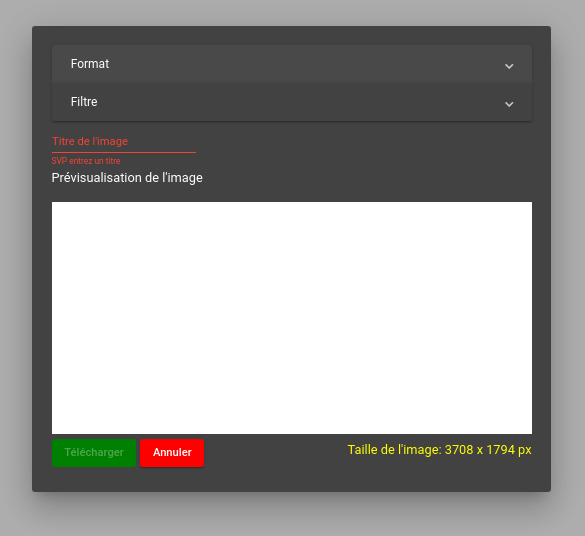

Pour créer un dessin il faut cliquer sur créer un dessin sur
la page principale. Le site vous mènera à la route "editor"
et vous pourrez utiliser tous les outils disponibles de
l'application. L'interface est faite de façon à ce que les
fonctionalités soient présentés à gauche. Vous pouvez cliquer
sur l'outil que vous voulez et ses propriétés seront affichées
à droite.
Carrousel de dessins
Il est possible d'accéder au carrousel de dessin
depuis le menu principal et avec le raccourcis ctrl-g
depuis la vue de dessin. On peut filtrer les dessins
affichés à l'aide des étiquettes assignées et decider de charger un dessin.
Sauvegarde automatique et manuelle
Une sauvegarde automatique est déclanchée après la création
d'un dessin, l'ouverture d'un dessin et à chaque
modification de la surface de dessin. La sauvegarde est
faite localement sur le navigateur de
l'utilisateur. En tout temps, il est possible de
sauvegarder manuellement un dessin en utilisant le
raccourcis ctrl-s.
Sauvegarde manuelle
Dans la fenêtre de sauvegarde manuelle, il est possible d'associer des étiquettes à
l'image que l'on souhaite sauvegarder. Les étiquettes ajoutées à l'image apparaissent
au dessus du bouton d'envoi et d'annulation. En cliquant sur le x, il est possible d'enlever
une étiquette. Une fois sauvegardé, le dessin apparaîtra dans le carroussel de dessins.
Après avoir cliquer sur le bouton sauvergarder, un message apparaîtra à l'écran afin
de confirmer la réussite de la sauvegarde du dessin.
Le titre est un champ oligatoire à remplir
Exportation
Lorsqu'on fait un dessin, il est possible de
l'exporter en format JPG ou PNG. Cette fonctionalité
permet aussi d'appliquer un filtre parmi cinq sur le
dessin. Les cinq filtres sont disponibles dans l'onglet
« filtre ». Il est possible d'envoyer le dessin
directement par email au lieu de l'exporter localement en cliquant
sur le bouton courriel.
La taille de l'image exportée est présentée au coin inférieur droit.
Le titre est un champ oligatoire à remplir
L'image sera exportée avec la taille exacte de la zone de dessin

Outils
Les outils sont présents sur la barre latérale gauche. Il
est possible de les sélectionner en cliquant sur l'outil ou en utilisant les
raccourcis suivant. Les propriétés de chaque outil peuvent également être manipulées.
Résultats
Touche
Crayon
C
Pinceau
W
Plume
P
Aérosol
A
Rectangle
1
Ellipse
2
Polygone
3
Ligne
L
Texte
T
Sceau de peinture
B
Efface
E
Étampe
D
Pipette
I
Rectangle de sélection
R
Éllipse de sélection
S
Baguette Magique
V
Options de la zone de travail
Les options de la zone de travail présentent les outils de grille et de magnétisme
Options
Touche
Afficher/masquer la grille
G
Activer/Désactiver le magnétisme
M
Augmenter la taille des carrés de la grille au prochain multiple de 5
+
Diminuer la taille des carrés de la grille au prochain multiple de 5
-
Options de manipulation de la sélection
Options
Touche
Couper la sélection
Ctrl-X
Copier la sélection
Ctrl-C
Coller la sélection
Ctrl-V
Supprimer la sélection
Delete
Tout sélectioner
Ctrl-A
Déplacer la sélection vers la gauche
Flèche gauche
Déplacer la sélection vers la droite
Flèche droite
Déplacer la sélection vers le bas
Flèche en bas
Déplacer la sélection vers le haut
Flèche en haut
Annuler
Ctrl-Z
Refaire
Ctrl-Shift-Z
Options de fichier
Options
Touche
Créer un nouveau dessin
Ctrl-O
Sauvegarder le dessin
Ctrl-S
Voir le carrousel de dessins
Ctrl-G
Exporter le dessin
Ctrl-E
Crayon
Le crayon permet de faire des dessins librement et
peut-être selectionné sur la barre verticale à gauche.
Pinceau
Le pinceau est composé de cinq filtres qui sont
visibles sur la barre de propriétés losrqu'on clique
dessus.
Plume
L'outil plume est similaire au crayon. L'unique différence est que la pointe de cet outil
est une ligne au lieu d'un point. Il est possible de choisir la longueur ainsi que l'angle
de la pointe afin de modifier les traits dessinés.
Aérosol
Cet outil simule un effet de peinture en aérosol. Dès que le bouton est enfoncé, un jet de peinture est
vaporisé sous le pointeur de la souris. L’outil continu ensuite d’émettre de la peinture à intervalle
régulier jusqu’à qu’à ce que le bouton soit relâché. Il est possible de faire varier le nombre d'émission
par seconde, le diamètre des goutelettes et le diamètre du jet.
Rectangle
Lorsque l'outil rectangle est choisi, il est possible de
dessiner des rectangles ou des carrés. Pour ce faire,
l'utilisateur doit faire un clique gauche à une
position de départ et relâche à la position finale. La
touche shift permet de dessiner un carré avec comme longueur le
plus petit des côtés du périmètre fait par la souris. La touche
escape permet d'annuler le dessin courant.
Ellipse
Lorsque l'outil ellipse est choisi, il est possible de
dessiner des ellipses ou des cercles. Pour ce faire,
l'utilisateur doit faire un clique gauche à une position de départ
et relâche à la position finale. En tout temps, le périmètre est
dessiné en pointillés. L'ellipse a donc la largeur et la
hauteur du périmètre. La touche shift permet de
dessiner un cercle avec comme diamètre le plus petit des côtés du
périmètre fait par la souris. La touche escape permet d'annuler le
dessin courant.
Polygone
L'outil polygone permet de dessiner plusieurs formes (des polygones) allant de 3 à 12 côtés.
Pour ce faire, l'utilisateur doit faire un clique gauche à une position de départ
et relâcher à la position finale. En tout temps, le périmètre est dessiné en pointillés.
Le polygone a donc la largeur et la hauteur du périmètre. La touche escape permet d'annuler la forme courante.
Il est possible de choisir l'épaisseur du contour de la forme dessinée si l'option contour est selectionnée.
Ligne
Lorsque l'outil ligne est sélectionné, il est possible
de faire des lignes droites entre deux cliques gauches
consécutifs. La touche escape permet d'annuler la
ligne en cours. La touche backspace permet d'annuler
la ligne faite la plus récente. La touche shift permet
l'alignement. Un double clic à 20 pixels du point
initial de la ligne lie le dernier segment au point
initial.
Texte
Cet outil permet d’écrire des chaines de caractères sur la surface de dessin. Pour l’utiliser, il suffit de
cliquer à l’endroit où l’on veut écrire. Il n’y a pas de retour à la ligne automatique, l’utilisateur doit
appuyer sur la touche d’entrée (Enter) pour créer une nouvelle ligne. Pendant l’édition du texte, il
est possible de se déplacer dans le texte avec les touches directionnelles (flèches) du clavier et
de supprimer avec la touche de retour arrière (Backspace) ou la touche de suppression (Delete).
Pour terminer la création d’un texte, il suffit de cliquer à l’extérieur de celui-ci ou de sélectionner
un autre outil. Appuyer sur la touche d’échappement (Escape) annule la création du texte.
Il est possible de définir la police du texte, la taille de la police, l'alignement du texte et le style du texte dans
le panneau de configuration de l'outil.
Sceau de peinture
L'outil « sceau de peinture » permet d'effectuer un remplissage qui colore une ou
plusieurs étendues de pixels en fonction de leur couleur. L’outil peut s’utiliser
selon deux modes d’opérations : « pixels contigus » et
« pixels non contigus ».
Pixels contigus (clic gauche):
Chaque pixel voisin partageant la couleur du pixel selectionné est ajouté
à la région. Pour chaque nouveau pixel ajouté, la vérification est effectuée à nouveau.
Le résultat de ce mode est une région de pixels connectés partageant la même couleur.
Enfin, la couleur princale est appliquée à tous les pixels de la région
Pixels non contigus (clic droit):
Chaque pixel du canvas (pas forcément voisin) partageant la couleur du pixel selectionné est ajouté
à la région. Ensuite, la couleur principale est appliquée à tous les pixels de la région.
Tolérance
Permet de colorer des pixels partageant une couleur similaire (nuances de couleurs)
Un pourcentage de zéro indique aucune tolérance : seuls les pixels de couleur indentique sont identifiés
comme étant à colorer. Plus le pourcentage monte, plus l’écart de couleur toléré est grand. Un
pourcentage de 100 indique une tolérance totale. C’est-à-dire que toutes les couleurs sont acceptées.
Il en résulte donc que l’entièreté des pixels de la surface de dessin sera à colorer.
Efface
L'outil efface peut être sélectionné dans la barre
latérale gauche et son épaisseur peut être modifier en
faisant apparître la barre de propriétés en cliquant
dessus.
Étampe
L’étampe permet d’apposer de petites images sur la surface de dessin. Pour l’utiliser, il suffit d’un
simple clic du bouton gauche à l’endroit où l’on désire apposer l’image. L'angle d'orientation de l'étampe
peut être modifiée à l'aide de la roulette de la souris.
Le panneau d’attributs permet de configurer :
• Le taille de l’étampe
• L'angle d’orientation de l’étampe en degrés
• Le choix d’image
Pipette
L'outil pipette permet de sélectionner la couleur
du pixel qui se trouve directement sous le pointeur de la souris.
Un clic avec le bouton gauche l'assigne à la couleur
principale et un clic avec le bouton droit l'assigne
à la couleur secondaire.
Grâce au cercle de prévisualisation se trouvant sur
le panneau d'attributs, il est possible de sélectionner
facilement et précisément un pixel particulier. Le cercle
est une représentation surdimensionée du canvas, comme une
loupe, qui suit le pointeur de la souris.
La sélection
Rectangle de sélection
Le rectangle de sélection permet de faire une sélection rectangulaire. Pour sélectionner,
l'utilisateur doit faire un clique gauche à une position de départ et relâcher à la position
finale. Les éléments de la surface de dessin se trouvant à l'intérieur de la zone pointillée
rectangulaire sont sélectionnés. Il devient désormais possible d'effectuer plusieurs manipulation (décrites
ci-dessous) sur la sélection.
L’utilisation de la touche d’échappement (Escape) fait annuler l’opération et l’utilisation
de la touche Shift permet de forcer la création d’un carré plutôt qu’un rectangle.
Éllipse de sélection
L'éllipse de sélection permet de faire une sélection éllipsoïdale. Pour sélectionner,
l'utilisateur doit faire un clique gauche à une position de départ et relâcher à la position
finale. Les éléments de la surface de dessin se trouvant à l'intérieur de la zone pointillée
éllipsoïdale ou circulaire sont sélectionnés. Il devient désormais possible d'effectuer plusieurs
manipulation (décrites ci-dessous) sur la sélection.
L’utilisation de la touche d’échappement (Escape) fait annuler l’opération et l’utilisation
de la touche Shift permet de forcer la création d’un cercle plutôt qu’une éllipse.
Baguette magique
La baguette magique permet de sélectionner des pixels selon leur couleur. Les pixels partageant la même
couleur seront sélectionner selon les deux modes ci-dessous:
Le mode pixels contigus (clic gauche de la souris): une seule sélection sera formée avec la région de pixels. Celle-ci sera
délimitée par un contour de sélection qui sera lui-même encadré par une boite englobante.
Le mode pixels non contigus (clic droit de la souris): la sélection sera formée d’un ou plusieurs groupes de pixels
disjoints. Chaque groupe aura son propre contour de sélection. L’ensemble de ces groupes sera lui
aussi encadré par une boite englobante.
Pour terminer les manipulations de la sélection, il faut appuyer sur la touche "Escape".
Manipulations de sélection
Lorsqu'on a une sélection de faite il est possible de
faire les manipulations suivantes.
Déplacement
Il est possible de déplacer la sélection courante avec
le bouton gauche de la souris. La sélection peut aussi
être déplacer à l'aide des quatre flèches.
Redimensionement
Lors d'une sélection il y a huit points de contrôle
qui autour du périmètre de sélection qui permettent le
redimensionement. Si la touche shift appuyée pendant
le redimensionement dans un des coins, le dessin garde
son ratio.
Rotation
La rotation se fait autour du centre de la boite
englobante à l'aide de la roulette.
Presse-papier
Les fonctions de copier, couper et coller sont toutes
disponibles lors d'une sélection. Les raccourcis
ctrl-c, ctrl-x et ctrl-v les activent
respectivement. Pour supprimer la sélection, on
utilise la touche delete. Ses fonctionalités sont
aussi accessible depuis la barre latérale.
Terminer une sélection
En tout temps, il est possible de terminer une
sélection en appuyant la touche escape ou en cliquant
en dehors de la sélection.
Annuler-refaire
Lorsqu'on fait un dessin, il est toujours possible
d'annuler ou de refaire une action. Pour se faire on
peut utiliser les raccourcis ctrl-z pour annuler et
ctrl-shift-z pour refaire. Il est aussi possible
d'accéder à cette fonctionalité depuis la barre
latérale .
Palette de couleur
La palette de couleur est positionnée sur la barre
verticale à gauche. Les couleurs principales sont
affichées sous formes de deux carrés colorés de la
couleur correspondante. Le rectangle de gauche
correspondond à la couleur principale et celle de
droite est la couleur secondaire. Lorsqu'on clique sur
une couleur l'éditeur de couleur s'ouvre. Lorsqu'on
modifie une couleur elle est ajoutée aux couleurs
récentes. Celles-ci sont positionnées au-dessus des
couleurs principales au fur et à mesure qu'elles sont
ajoutées.
Grille et magnetisme
Sur la surface de dessin, il est possible d'afficher
une grille à l'aide de la touche G et d'augmenter ou
de réduire la taille des carrés à l'aide des touches +
et -. Il est alors possible d'activer la fonctionalité
de magnétisme qui permet d'alligner une sélection en x
et en y lors d'un déplacement. Cette fonctionalité est
activé en utilisant la touche M. Il est possible de
sélectionner l'un des huit points de contrôle comme
point d'encrage. Il est aussi possible de choisir le
centre de la boite englobante comme point d'encrage.